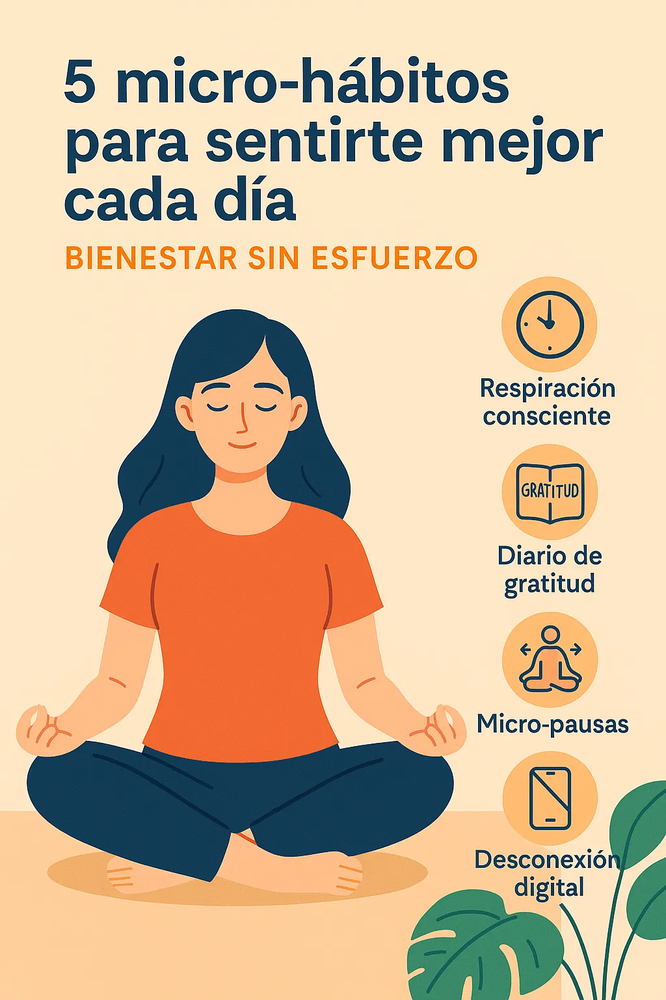
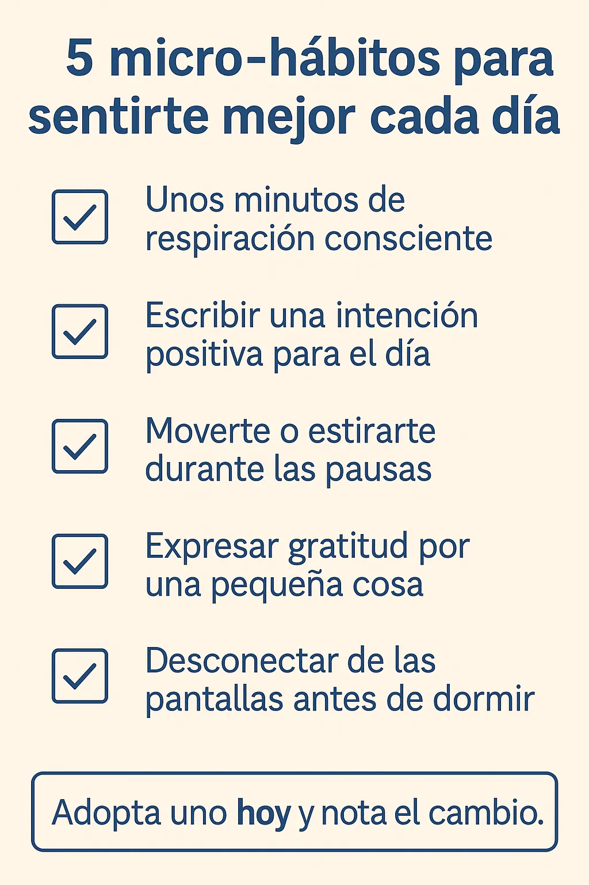

5 micro-hábitos para sentirte mejor cada día: bienestar sin esfuerzo
Introducción: Por qué los micro-hábitos transforman tu bienestar diario
¿Quieres mejorar tu bienestar pero no sabes por dónde empezar? Los micro-hábitos de bienestar diario son la respuesta. Son tan pequeños que no necesitan esfuerzo extra, pero con constancia transforman tu día a día.
Beneficios de incorporar micro-hábitos en tu rutina
Los micro-hábitos ayudan a reducir estrés, mejoran tu concentración y refuerzan tu equilibrio emocional. Son el complemento perfecto para tu Mindfulness Diario, tu Guía de Respiración o tu Guía de Meditación.
5 micro-hábitos para elevar tu bienestar mental y emocional
1️⃣ Respiración consciente por 2 minutos
Detente dos minutos cada día para inhalar profundo y exhalar lento. Puedes aplicar la técnica 4-7-8 de la Guía de Respiración. Hazlo antes de reuniones o cuando notes tensión acumulada.
2️⃣ Diario de gratitud express
Antes de dormir, escribe una o dos cosas positivas del día. No importa si son pequeñas: todo suma. Si quieres profundizar, explora nuestro Journal para la Ansiedad.
3️⃣ Micro-pauses de estiramiento
Levántate cada hora, gira hombros y cuello, estira brazos. 30 segundos bastan. Para algo más guiado, revisa la Guía de Yoga para Principiantes.
4️⃣ Desconexión digital antes de dormir
Deja el móvil 15 minutos antes de acostarte. Aprovecha para respirar, meditar o escribir en tu Mindfulness Diario.
5️⃣ 3 respiraciones profundas al despertar
Quédate en la cama y respira hondo tres veces. Empieza el día lento y sin prisas mentales.
Cómo aplicar estos micro-hábitos sin abandonar al tercer día
✅ Empieza con uno solo. ✅ Pon recordatorios visibles (una nota en el escritorio o alarma en el móvil). ✅ Sé flexible: un micro-hábito no debe estresarte, sino ayudarte. ✅ Combínalo con un lugar relajante como tu rincón de paz en casa.
Errores comunes al intentar nuevos hábitos de bienestar
- Querer adoptar todos los micro-hábitos de golpe.
- Ser demasiado rígido: la flexibilidad es clave.
- Abandonar a la primera distracción.
Combina tus micro-hábitos con otras prácticas de calma
Reforzarás el impacto si sumas técnicas de respiración, meditación guiada o yoga suave. Usa nuestra Guía de Meditación o crea un rincón de paz en casa para practicarlos.
Preguntas frecuentes sobre micro-hábitos de bienestar diario
¿Cuánto tiempo tarda en hacerse hábito? Entre 21 y 30 días con constancia.
¿Debo hacerlos todos? No, uno es suficiente para empezar.
¿Qué pasa si un día lo olvido? Nada grave. Retómalo al siguiente día.
Conclusión: Empieza hoy y siente la diferencia
Estos micro-hábitos de bienestar diario son tan fáciles de aplicar que casi no sentirás esfuerzo. Su secreto es la constancia. Elige uno, intégralo y disfruta de tu bienestar ampliado cada día.